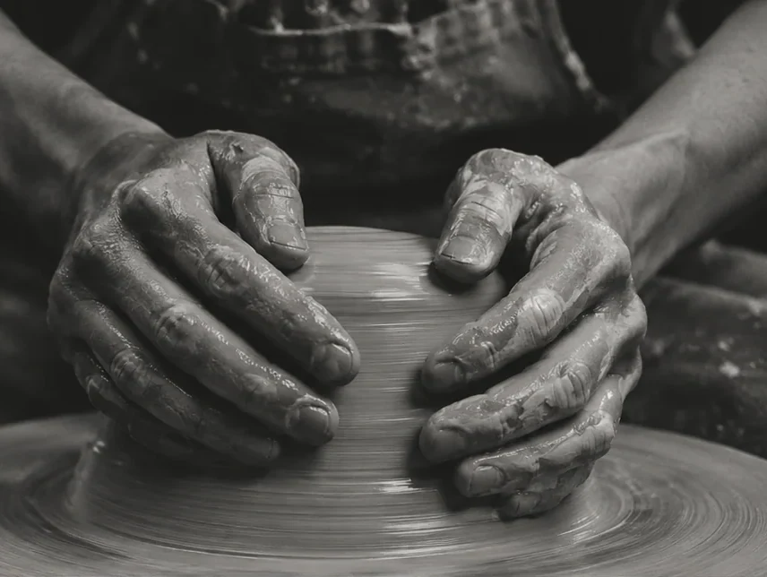
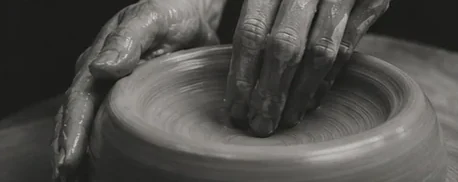
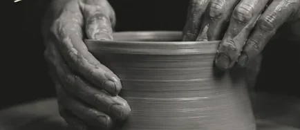
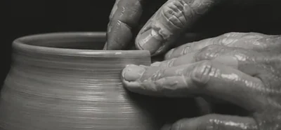

At the
potter’s wheel
Follow a potter through centring, opening, lifting and shaping a vessel.
Explore the gestures



01 — Centre
The maker brings the spinning clay into balance before attempting to shape a wall.
02 — Open
The opening creates the inside of the vessel; the base remains beneath it.
03 — Lift
The maker raises the wall from the base, supporting the clay as the form grows.
04 — Shape
Pressure changes the profile: a wider lip, a narrower neck or a more generous belly. Compare the silhouette from the side.
Operator’s workshop / Wheel trialSee the current wheel classes